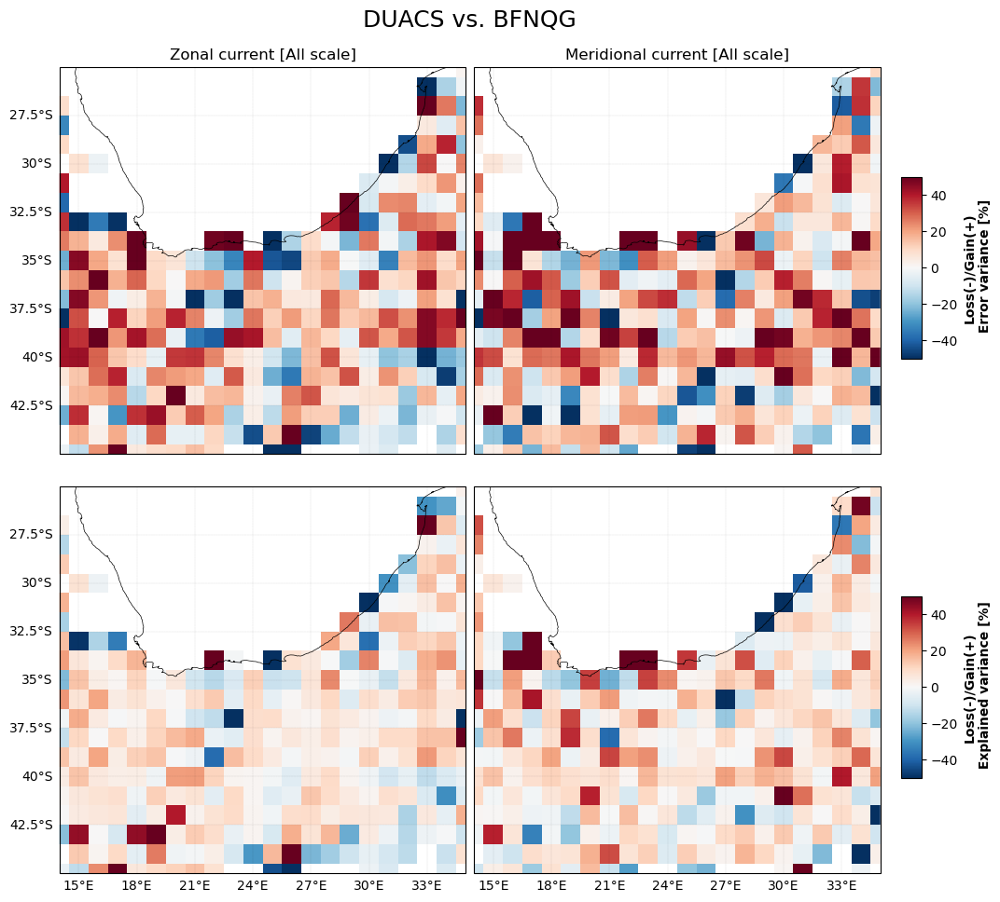
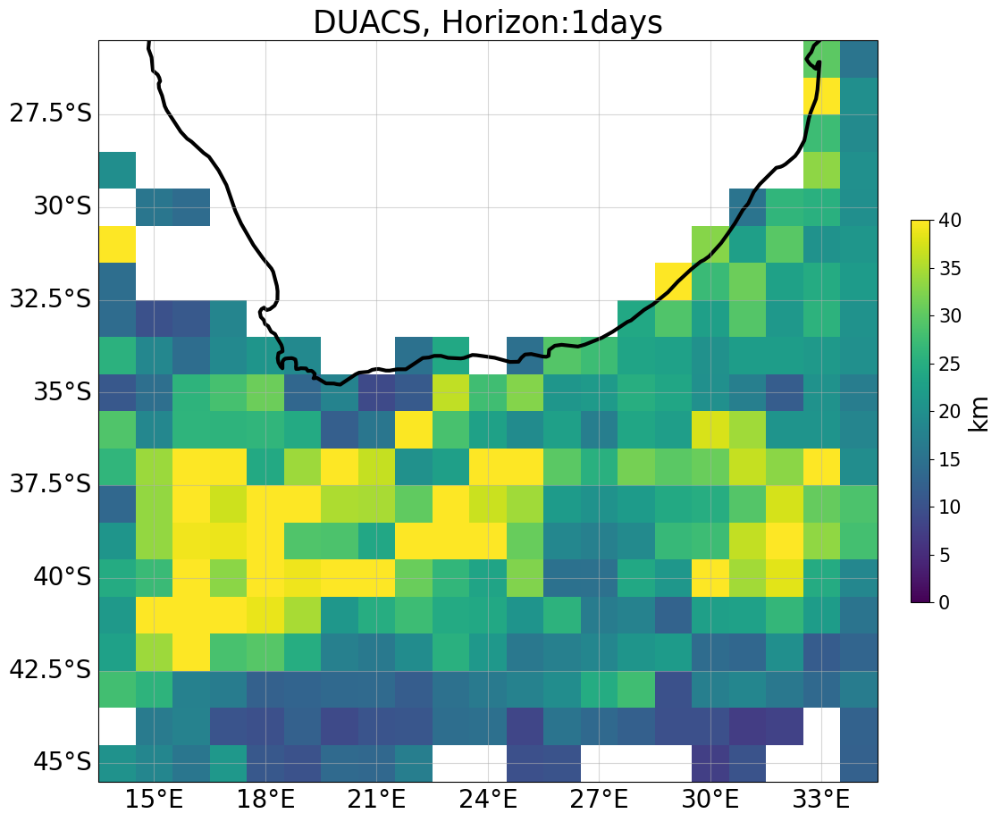
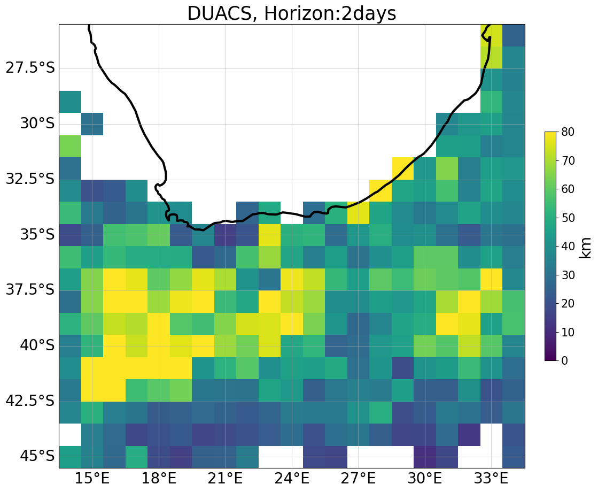
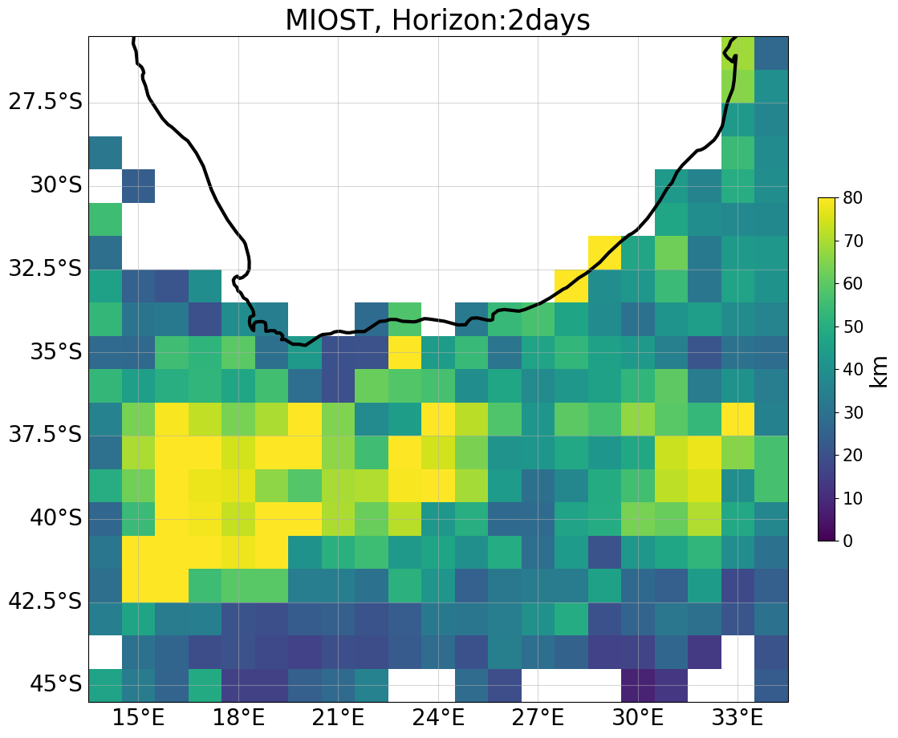
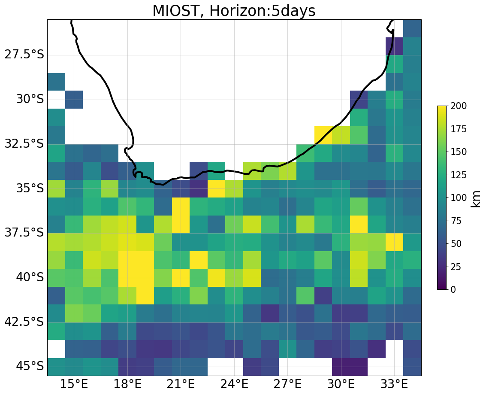
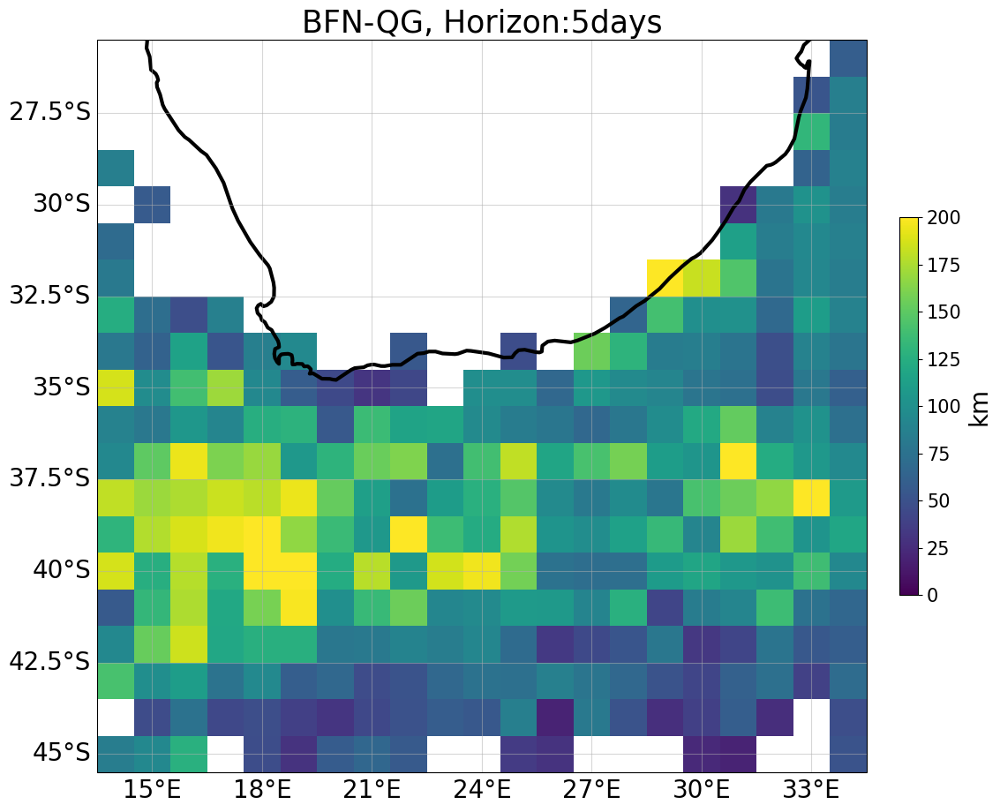

Overall comparison
Metric boards
Variance error [m²/s²] ⤵️
Region |
Method |
Variance error u [m²/s²] |
Variance error v [m²/s²] |
|---|---|---|---|
coastal |
DUACS |
0.051408 |
0.055813 |
MIOST |
0.049734 |
0.058365 |
|
BFN-QG |
0.051588 |
0.051550 |
|
offshore_highvar |
DUACS |
0.048399 |
0.051483 |
MIOST |
0.048318 |
0.052196 |
|
BFN-QG |
0.043017 |
0.044031 |
|
offshore_lowvar |
DUACS |
0.023910 |
0.021734 |
MIOST |
0.023864 |
0.021658 |
|
BFN-QG |
0.024237 |
0.021606 |
Error scores ⤵️
Region |
Method |
Error score u |
Error score v |
|---|---|---|---|
coastal |
DUACS |
72.3 % |
67.1 % |
MIOST |
72.8 % |
64.3 % |
|
BFN-QG |
72.0 % |
68.5 % |
|
offshore_highvar |
DUACS |
73.3 % |
68.4 % |
MIOST |
73.3 % |
68.0 % |
|
BFN-QG |
76.3 % |
73.0 % |
|
offshore_lowvar |
DUACS |
54.5 % |
53.7 % |
MIOST |
54.6 % |
53.9 % |
|
BFN-QG |
53.9 % |
54.0 % |
Current magnitud movie
Current movies ⤵️
Current error comparison
Zonal and Meridional current error and explained variance comparison ⤵️

Lagrangian cumulative distance comparison
LCD maps ⤵️
 |
 |
|||
|---|---|---|---|---|
 |
 |
|||
|
|
|
|
 |


LCD temporal horizon series ⤵️